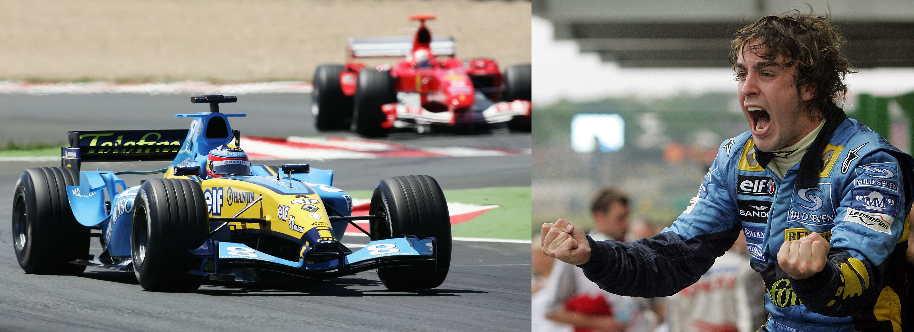

10 equipos, 27 pilotos y 19 destinos en el mundo. La edición número 56 del Fédération Internationale de l'Automobile Campeonato Mundial Formula 1 en 2005 fue un campeonato particularmente recordado por ser el último con el legendario y feroz motor V10, su polémico reglamento, el debut de Red Bull Racing y el Gran Premio de Turquía, y sus principales protagonistas: Michael Schumacher y Fernando Alonso.
En la edición anterior, continuaba el reinado del máximo campeón de la historia hasta ese momento. El alemán Michael Schumacher, también conocido como 'El Kaiser' o 'El Barón Rojo', pilotando su icónico Ferrari, dominaba la escena desde hace varias temporadas siendo ganador de tanto el Campeonato de Pilotos como el Campeonato de Constructores con Ferrari. Sin imaginar que una nueva estrella se asomaba rivalizando la conquista.

| Parilla de Pilotos | ||
|---|---|---|
| Escudería | Chasis | Pilotos |
| Scuderia Ferrari Marlboro | F2004M F2005 | Michael Schumacher - Alemania Rubens Barrichello - Brasil |
| Lucky Strike BAR Honda | 007 | Jenson Button - Reino Unido Takuma Satō - Japón Anthony Davidson - Reino Unido |
| Mild Seven Renault F1 Team | R25 | Fernando Alonso - España Giancarlo Fisichella - Italia |
| BMW Williams F1 Team | FW27 | Mark Webber - Australia Nick Heidfeld - Alemania Antônio Pizzonia - Brasil |
| Team McLaren Mercedes | MP4-20 | Kimi Räikkönen - Finlandia Juan Pablo Montoya - Colombia Pedro de la Rosa - España Alexander Wurz - Austria |
| Sauber Petronas | C24 | Jacques Villeneuve - Canadá Felipe Massa - Brasil |
| Red Bull Racing | RB1 | David Coulthard - Reino Unido Christian Klien - Austria Vitantonio Liuzzi - Italia |
| Panasonic Toyota Racing | TF105 TF105B | Jarno Trulli - Italia Ralf Schumacher - Alemania Ricardo Zonta - Brasil |
| Jordan Grand Prix | EJ15 EJ15B | Tiago Monteiro - Portugal Narain Karthikeyan - India |
| Minardi F1 Team | PS04B PS05 | Patrick Friesacher - Austria Robert Doornboos - Mónaco Christijan Albers - Paises Bajos |
Con una temporada llena de emoción, momentos inolvidables y acción rueda contra rueda. El flamante ganador del Campeonato de Pilotos fue el español Fernando Alonso, destronando y poniendo fin a la era del siete veces campeón Michael Schumacher. Demostrando audacia, inteligencia y puro talento, levantó el título por primera vez en la carrera de Brasil, quedando tercero y asegurando el título en el circuito de Interlagos.
Fue el piloto más jóven en coronarse campeón del mundo hasta ese momento, con 24 años, un mes y 27 días. Y junto a su compañero, Giancarlo Fisichella, lograron a su vez quedarse con el Campeonato de Constructores a nombre de Renault.
